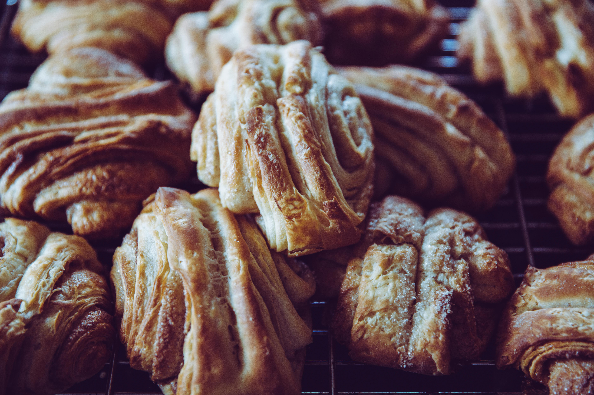
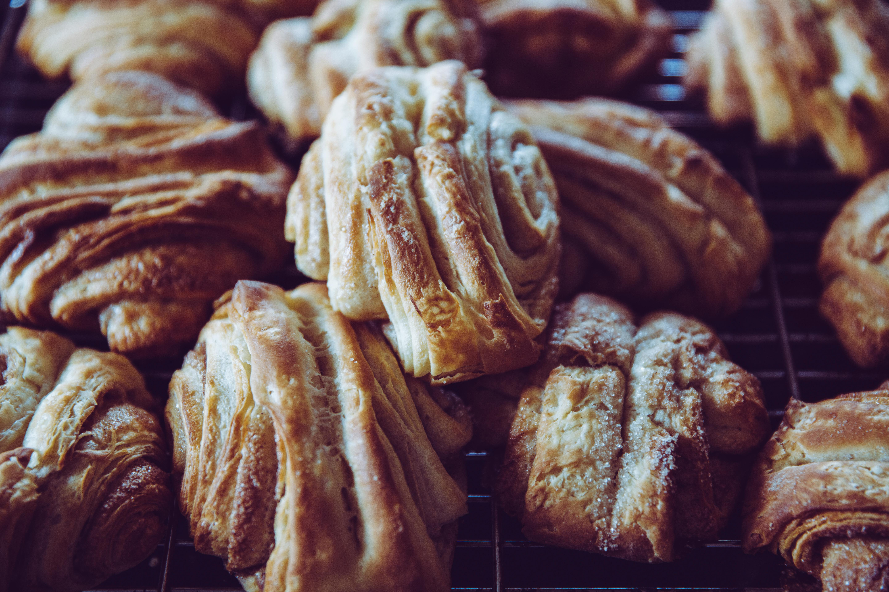

Nossos Produtos e Ambiente


 


Sobre Nós
A Padaria Doce Pão nasceu em 1995 com a missão de trazer pães fresquinhos todos os dias para a nossa comunidade.
Começamos com um pequeno forno e muito amor pelo que fazemos. Hoje somos referência em qualidade e atendimento na cidade.
Cardápio Completo
| Categoria | Produto | Descrição | Preço |
|---|---|---|---|
| 🍞 Pães | 🥖 Pão Francês | O tradicional pãozinho crocante por fora e macio por dentro | R$ 0,60/un |
| 🍞 Pão de Forma | Pão fofinho integral ideal para sanduíches | R$ 14,00/und | |
| 🥐 Croissant | Folhado crocante feito com manteiga de primeira qualidade | R$ 6,50/un | |
| 🌾 Pão Sírio | Pão árabe tradicional, perfeito para lanches saudáveis | R$ 3,50/un | |
| 🍰 Doces | 🍫 Bolo de Chocolate | Bolo macio com cobertura de chocolate meio amargo | R$ 38,00/kg |
| 🍓 Torta de Morango | Massa amanteigada com creme e morangos frescos | R$ 45,00/kg | |
| 🥧 Quindim | Doce tradicional brasileiro feito com coco fresco | R$ 5,00/un | |
| 🥮 Salgados | 🍗 Coxinha | Massa crocante com recheio de frango desfiado | R$ 6,00/un |
| 🧀 Pastel de Queijo | Massa folhada com queijo derretido | R$ 5,50/un | |
| 🥟 Esfirra | Massa árabe com recheio de carne temperada | R$ 5,00/un | |
| 🥪 Sanduíche Natural | Pão integral com peito de peru, queijo e vegetais | R$ 12,00/un | |
| ☕ Bebidas | 🥤 Suco Natural | Suco feito na hora (laranja, abacaxi ou maracujá) | R$ 8,00/copo |
Diferenciais
- 🥬 Ingredientes frescos diários
- 📜 Receitas tradicionais
- 🤝 Atendimento personalizado
Horário de Funcionamento
| Dia da Semana | Horário |
|---|---|
| Segunda a Sexta | 06:00 - 22:00 |
| Sábado | 06:00 - 18:00 |
| Domingos e feriados | 08:00 - 12:00 |